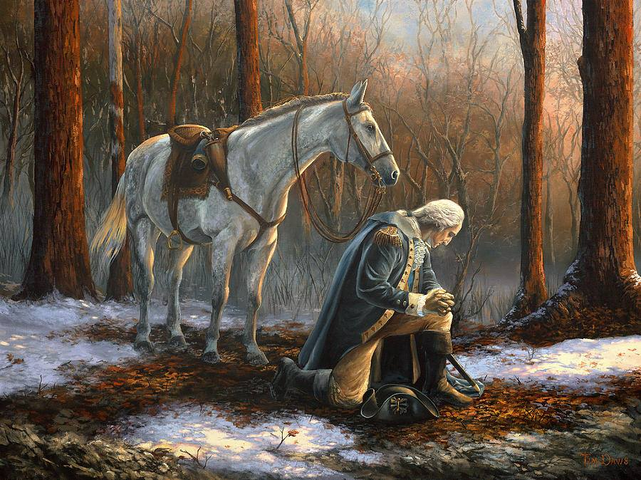

!DOCTYPE html PUBLIC "-//W3C//DTD XHTML 1.0 Transitional//EN"
"http://www.w3.org/TR/xhtml1/DTD/xhtml1-transitional.dtd">
My First Web Page
Hello World
A Place I would like to visit
I would like to visit Germany, because my family comes from there. I also think that it would be cool to see all the
castle and historic places. The food would also be a deciding factor, typical German food is spatizl, sourkraut,
and brotwursts.
Germany Facts here
A person I admire
(past or present)
I admire President George Washington becuase he could have been the king of America but he chose not to be.
Washington Facts here

apples
pears
melons
rasphberrys
strawberrys
Favorite Presidents
George Washington
Ulysses S Grant
Abe Lincoln
Gerald Ford
John F Kennedy